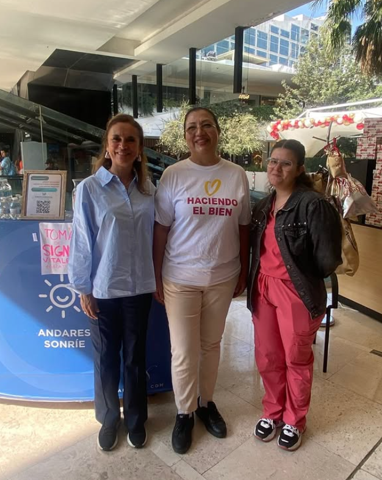

Conversemos
Si necesitas orientación o deseas sumarte, en Casa Isis Rico te escuchamos con empatía y respeto.
Canales directos
Correo: contacto@isisrico.org (Suggested Content)
Teléfono: +52 33 0000 0000 (Suggested Content)
Horario: Lunes a viernes, 9:00 a. m. - 5:00 p. m. (Suggested Content)
Nuestra promesa
Responderemos con calidez, claridad y oportunidad. Cada mensaje es importante para seguir cuidando a nuestra comunidad de personas mayores.
